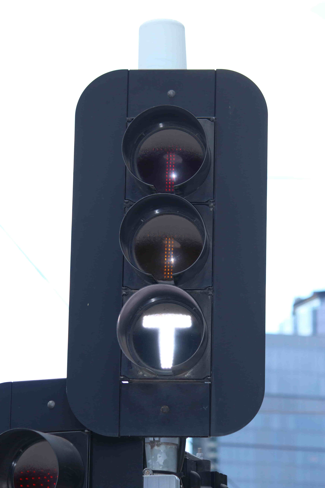
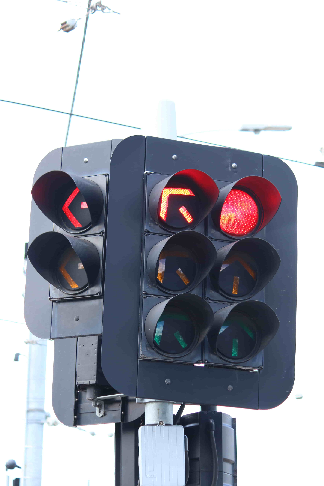
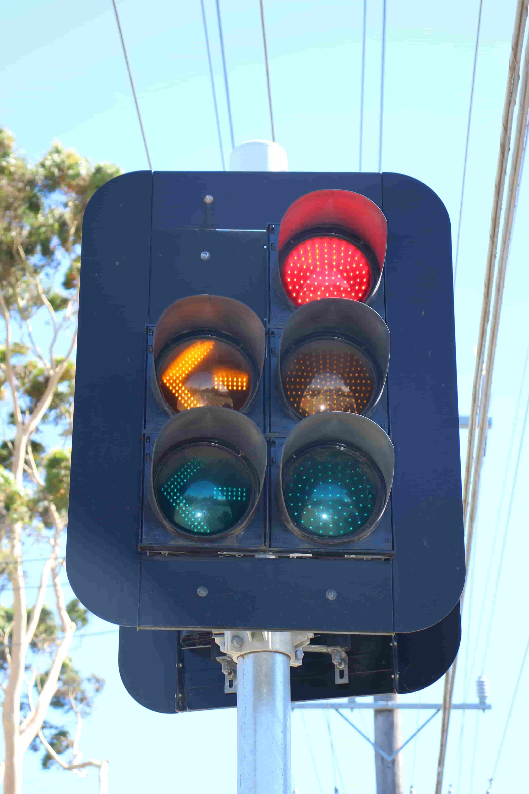
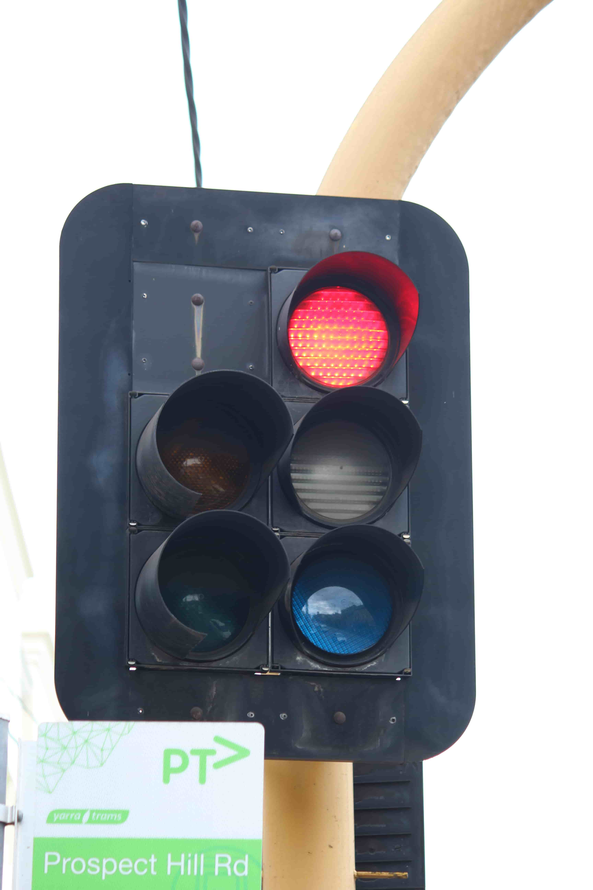
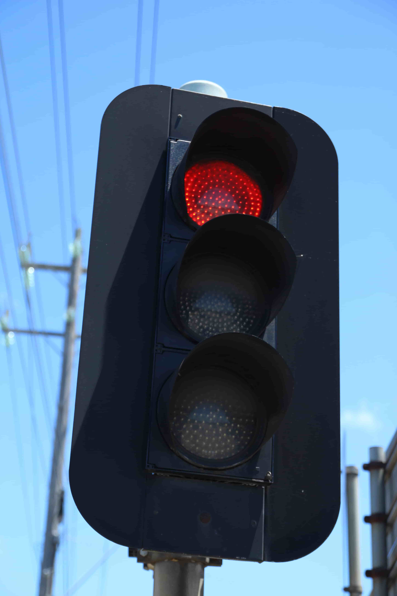
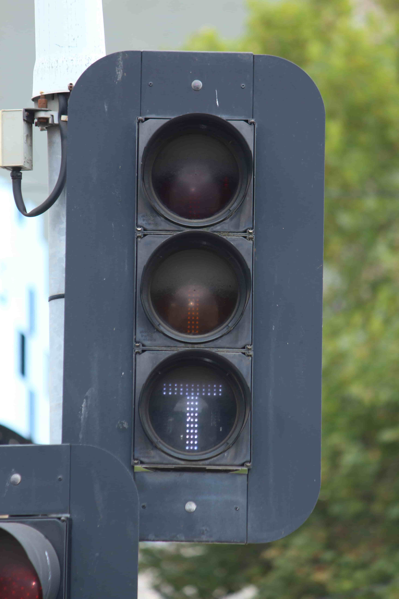

Aldridge has been manufacturing LED traffic signals from the mid to late-1990's to the present day, becoming very widespread since the mid-2000's.
| Aldridge Clear LEDs - Revision 1  |
Aldridge Clear LEDs - Revision 2  |
Aldridge Traffic Systems LEDs  |
|---|
| Aldridge Traffic Group LEDs  |
Aldridge Traffic Group CLS LEDs  |
Aldridge Electrical Industries LEDs  |
Aldridge Elec. Industries CLS LEDs |
|---|